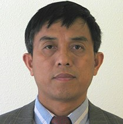

| Name | Area Of Expertise | Contact | |
|---|---|---|---|
| Alan Sill, Co-Director |  |
|
Contact: 806.834.5940, alan.sill@ttu.edu |
| Salim Hariri, Co-Director |
 |
|
Contact: (520) 621-4378, hariri@ece.arizona.edu |
| Ravi Vadapalli, Site Director |
 |
|
Contact: 806.834.5941, ravi.vadapalli@ttu.edu |
| Ali Akoglu, Site Director |
 |
|
Contact: (520) 626-5149, akoglu@ece.arizona.edu |
| Yong Chen, Associate Site Director |  |
|
Contact: 806.742.3527, yong.chen@ttu.edu |
| Yu Zhuang, Ph.D. |
|
Contact: 806.742.3527, yu.zhuang@ttu.edu |
|
| Susan A. Mengel, Ph.D. |
 |
|
Contact: 806.742.3527, susan.mengel@ttu.edu |
| Jennifer Cross, Ph.D. |
 |
|
Contact: 806.742.3543, jennifer.cross@ttu.edu |
| Alex Trindade, Ph.D. |
 |
|
Contact: 806.834.6164, alex.trindade@ttu.edu |
| Zhangxi Lin, Ph.D. |  |
|
Contact: 806.742.1926, zhangxi.lin@ttu.edu |
| Jerry Perez, Ph.D. |
|
Contact: 806.834.6929, jerry.perez@ttu.edu |
|
| Lisa Gittner, Ph.D. |
 |
|
Contact: 806.834.4193, lisa.gittner@ttu.edu |
| Hafiz Khan M.R., Ph.D. |
 |
|
Contact: 806.743.4213, hafiz.khan@ttuhsc.edu |
| Cihan Tunc, Ph.D. |
 |
|
Contact: 520-262-6345 , cihantunc@email.arizona.com |